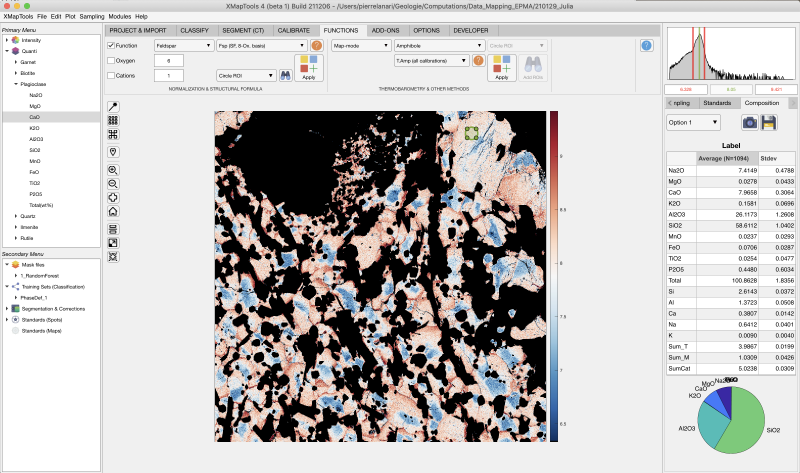
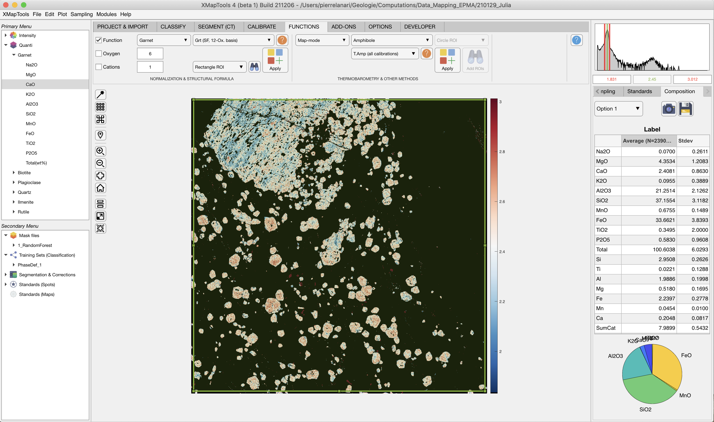
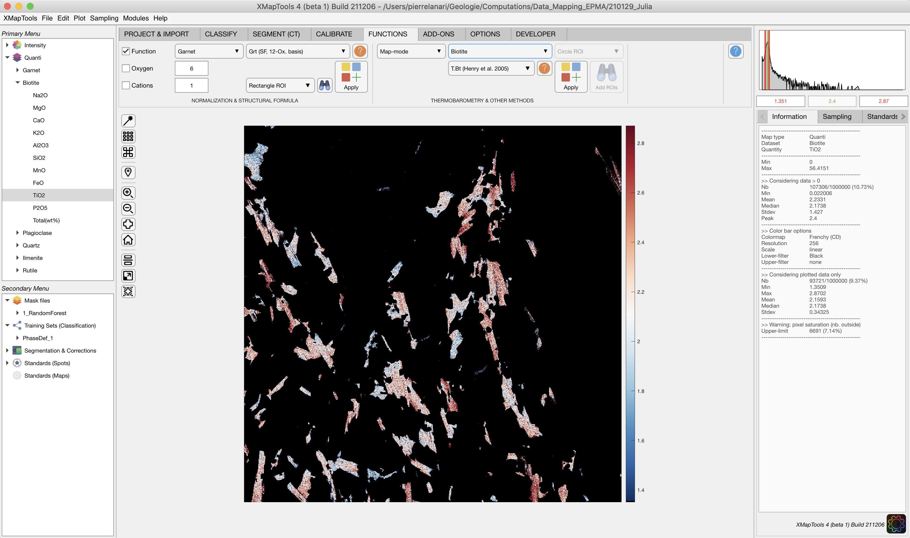
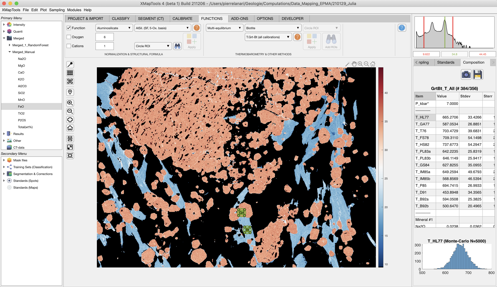

Help file version 22.12.2022 by M. Tedeschi & P. Lanari
Access XMapTools resources online
Table of content
Normalisation & Structural Formula
Export mineral composition and structural formula
Thermobarometry & Other Methods
- Map-mode
- Multi-equilibrium
This help file contains a description of the tools available in the section Functions.
Not all functions from XMapTools 3 are implemented yet. Contact Pierre Lanari (pierre.lanari@geo.unibe.ch) if you want additional functions to be added in future releases.
These tools allow maps of structural formulas expressed in atoms per formula units (apfu) to be calculated for selected minerals. Select a quanti file under the category Quanti in the primary menu to activate these tools.
Three modes are available:
Select the mode and either pick a function via the menus or set the number of oxygen or cations to be used for the normalisation.
 The button Apply (Apply the Selected Function (Structural Formula)) calculates a structural formula and store the results under a new entry in the category Results in the Primary Menu. To display the result, unfold the menu by clicking on the arrow on the left side of the mineral name and pick a map.
The button Apply (Apply the Selected Function (Structural Formula)) calculates a structural formula and store the results under a new entry in the category Results in the Primary Menu. To display the result, unfold the menu by clicking on the arrow on the left side of the mineral name and pick a map.
It is possible to export average mineral composition and the corresponding structural formula.
Select a quanti file and display one element (e.g. CaO in plagioclase in Fig. 1 below). This selection will activate the export mode available in the section Functions. Select a ROI shape using the dropdown menu (circle, rectangle or polygon).
 The button Add ROI for Exporting Compositions activate the drawing mode. Draw a ROI and the average mineral composition. Results are displayed in the live display module. The ROI can be edited and the results will be updated.
The button Add ROI for Exporting Compositions activate the drawing mode. Draw a ROI and the average mineral composition. Results are displayed in the live display module. The ROI can be edited and the results will be updated.

Figure 1: Exporting composition and structural formula of plagioclase. The ROI is located in the top-right corner of the image and the average composition of 1094 pixels shown in the table of the live display module.
Figure 2: Exporting the average composition of garnet. Only garnet compositions are used to calculate the structural formula (239'008/1'000'000 pixels).External functions not dedicated to structural formula calculations are available here. They are divided into two categories:
Select a quanti file in the Primary Menu and activate the mode Map-mode. Select the mineral in the second dropdown menu and the calibration in the third menu. An example is provided below in Figure 3.
 The button Apply (Apply the Selected Function (other)) calculates runs the selected function and store the results under a new entry in the category Results in the Primary Menu. To display the result, unfold the menu by clicking on the arrow on the left side of the mineral name and pick a map.
The button Apply (Apply the Selected Function (other)) calculates runs the selected function and store the results under a new entry in the category Results in the Primary Menu. To display the result, unfold the menu by clicking on the arrow on the left side of the mineral name and pick a map.

Figure 2: Example of calculation of temperature map for biotite. Note that a map of the quanti file Biotite is displayed. The map-mode is activated, the mineral biotite was picked and the function T.Bt (Henry et al. 2005).Select a merged map in the Primary Menu and activate the mode Multi-equilibrium. This mode is only available with merged maps as the composition of multiple minerals are required. Note that it is possible to generate a merged map with a limited number of minerals (in Calibrate).
Select a mineral in the second dropdown menu and the calibration in the third menu. An example is provided below in Figure 4.
Each function name contain the variable that is calculated, and the mineral pair. The order of the mineral pair (e.g. Grt-Bt) is important because the minerals need to be selected in this specific order.
 The button Apply (Apply the Selected Function (other)) enables the drawing mode. Select several ROI for the minerals, in the order indicated in the function name. Results are displayed in a table of the live module.
The button Apply (Apply the Selected Function (other)) enables the drawing mode. Select several ROI for the minerals, in the order indicated in the function name. Results are displayed in a table of the live module.

Figure 2: Example of calculation of temperature for the couple garnet-biotite. Note that a merged map is displayed. The multi-equilibrium is activated, the mineral biotite was picked and the function T.Grt-Bt (all calibrations). In this case, garnet (Grt) needs to be selected first and biotite (Bt) second. Results are displayed in the live display module on the right.